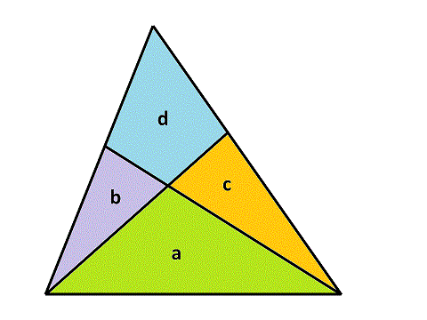
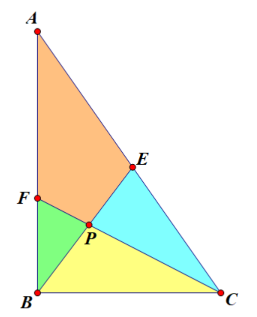

Project Euler 557
Project Euler 557
题目
Cutting triangles
A triangle is cut into four pieces by two straight lines, each starting at one vertex and ending on the opposite edge. This results in forming three smaller triangular pieces, and one quadrilateral. If the original triangle has an integral area, it is often possible to choose cuts such that all of the four pieces also have integral area. For example, the diagram below shows a triangle of area \(55\) that has been cut in this way.

Representing the areas as \(a, b, c\) and \(d\), in the example above, the individual areas are \(a = 22, b = 8, c = 11\) and \(d = 14\). It is also possible to cut a triangle of area \(55\) such that \(a = 20, b = 2, c = 24, d = 9\).
Define a triangle cutting quadruple \((a, b, c, d)\) as a valid integral division of a triangle, where \(a\) is the area of the triangle between the two cut vertices, \(d\) is the area of the quadrilateral and \(b\) and \(c\) are the areas of the two other triangles, with the restriction that \(b \le c\). The two solutions described above are \((22,8,11,14)\) and \((20,2,24,9)\). These are the only two possible quadruples that have a total area of \(55\).
Define \(S(n)\) as the sum of the area of the uncut triangles represented by all valid quadruples with \(a+b+c+d \le n\).
For example, \(S(20) = 259\).
Find \(S(10000)\).
解决方案
原题中的大三角形是任意形状，并不要求是直角三角形。为了计算简洁，可以先做一次保面积的仿射归一化，把任意非退化三角形变到一个标准坐标形状。该变换保持：直线仍是直线；共线与交点关系保持；从顶点连到对边”的切分结构保持；变换行列式取 \(1\) 时，面积数值保持不变。
因此不失一般性地可设\(B(0,0), C(1,0), A(0,2s),\)从而\(S_{\triangle ABC}=s.\)接下来把四块区域面积约定为：\(a=S_{\triangle BPC},b=S_{\triangle BFP},c=S_{\triangle CPE},d=S_{AFPE},\)并且\(s=a+b+c+d.\)

设两条切线分别为：从 \(B\) 到 \(AC\) 上点 \(E\)，令\(E=(u,2s(1-u)), 0<u<1;\)从 \(C\) 到 \(AB\) 上点 \(F\)，令\(F=(0,2s(1-v)), 0<v<1.\)记\(P=BE\cap CF.\)
接下来求交点 \(P\) 的坐标。
我们给出如下直线参数式方程\(BE:(\lambda u,2s\lambda(1-u)),CF:(1-\mu,2s\mu(1-v)).\)联立得到\(\lambda=\dfrac{1-v}{1-uv},\mu=\dfrac{1-u}{1-uv},\)故
\[P=\left(\frac{u(1-v)}{1-uv},\frac{2s(1-u)(1-v)}{1-uv}\right).\]
由坐标面积公式可得
\[ \begin{aligned} a&=S_{\triangle BPC}=s\frac{(1-u)(1-v)}{1-uv},\\ b&=S_{\triangle BFP}=s\frac{u(1-v)^2}{1-uv},\\ c&=S_{\triangle CPE}=s\frac{v(1-u)^2}{1-uv},\\ d&=S_{AFPE}=s-a-b-c=s\frac{uv(2-u-v)}{1-uv}. \end{aligned} \]
根据上式，可得\(\dfrac{bc}{a^2}=uv.s+a=s\left(1+\dfrac{(1-u)(1-v)}{1-uv}\right)=s\dfrac{2-u-v}{1-uv},\)从而\(\dfrac{d}{s+a}=uv.\)于是
\[ \frac{bc}{a^2}=\frac{d}{s+a} \Longrightarrow bc(s+a)=a^2d. \]
固定 \((s,a,d)\) 后，令\(m=b+c=s-a-d,p=bc=\dfrac{a^2d}{s+a}.\)因此 \(b,c\) 是二次方程\(x^2-mx+p=0\)的两根。要 \(b,c\in\mathbb Z_{>0}\)，等价于：\(p\in\mathbb Z\)；判别式\(\Delta=m^2-4p\)为非负完全平方数；\(m-\sqrt\Delta\) 为偶数；\(b=\dfrac{m-\sqrt\Delta}{2}\ge 1\)。并且取\(b=\dfrac{m-r}{2}, c=\dfrac{m+r}{2}, r=\sqrt\Delta\ge0,\)可自动满足 \(b\le c\)，不会重复计数。
为此，我们将进行如下范围枚举即可：\(s\) 从 \(4\) 到 \(n\)；\(a\) 从 \(1\) 到 \(s-3\)；\(d\ge1\) 且 \(b+c=s-a-d\ge2\)，故\(d\le s-a-2.\)
接下来进行两个剪枝：
- 由\(p=\dfrac{a^2d}{s+a}\in\mathbb Z\iff (s+a)\mid a^2d.\)设\(g=\gcd(a^2,s+a),t=\dfrac{s+a}{g},\)则 \(d\) 必须是 \(t\) 的倍数。若写 \(d=tk\)，则\(p=\dfrac{a^2}{g}\cdot k.\)
- 固定 \((s,a)\)，把\(\Delta(d)=(s-a-d)^2-4\dfrac{a^2}{s+a}d\)视作关于 \(d\) 的函数。在区间 \(0<d\le s-a\) 上，\(\Delta'(d)=-2(s-a-d)-4\dfrac{a^2}{s+a}<0.\)所以 \(\Delta\) 严格递减。枚举 \(d\) 时，一旦出现 \(\Delta<0\)，后续更大的 \(d\) 全部不可能。
代码
1 |
|